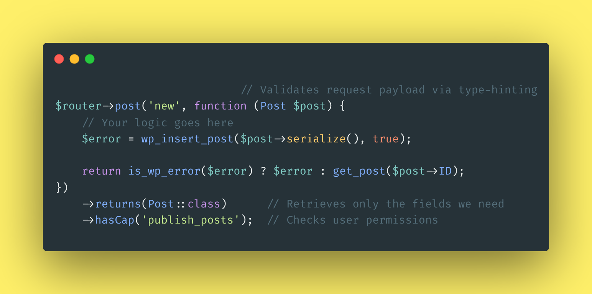

WP-FastEndpoints
WP-FastEndpoints



WP-FastEndpoints is an elegant way of writing custom WordPress REST endpoints with a focus on simplicity and readability.
Features
- Validates data via type-hints
- Removes unwanted fields from responses
- Middlewares support
- No magic router. It uses WordPress
register_rest_route - Able to treat plugins as dependencies via WP-FastEndpoints Depends
Requirements
- PHP 8.1+
- WordPress 6.x
- attributes-php/validation
- attributes-php/serialization
- php-di/invoker
We aim to support versions that haven’t reached their end-of-life.
Installation
composer require attributes-php/wp-fastendpoints
WP FastEndpoints was created by André Gil and is open-sourced software licensed under the MIT license.
Last updated:
Edit this page
Recent commits